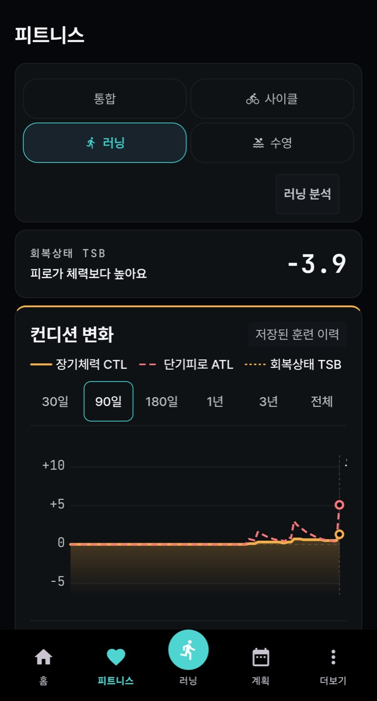

피트니스·계획 탭은 웹(orider.co.kr)의 화면을 앱 안에서 보여 줍니다. 로그인과 인터넷 연결이 필요하고, 웹에서 바꾼 목표·계획이 그대로 보입니다. 앱 하단 탭과 웹 메뉴는 이렇게 대응합니다: 앱 피트니스 = 웹 코치 > 훈련 상태, 앱 계획 = 웹 코치 > 계획(목표는 웹 코치 > 목표). 목표 만들기는 웹 설명서 7.4 목표를 보세요.
화면 읽는 법: 피트니스 탭

피트니스 — 위쪽에서 통합 · 사이클 · 러닝 · 수영 중 볼 종목을 고릅니다. 지금은 러닝이 선택된 상태입니다.
위쪽 종목 버튼으로 볼 종목을 고릅니다. 러닝 분석처럼 종목별 분석 버튼이 함께 나옵니다.
회복상태 TSB 카드의 숫자와 한 줄 설명(예: “피로가 체력보다 높아요”)으로 오늘 상태를 봅니다.
훈련 부하 변화 그래프에서 장기체력 CTL · 단기피로 ATL · 회복상태 TSB 선을 30일 · 90일 · 180일 · 1년 · 3년 · 전체로 바꿔 봅니다.
워크아웃 업데이트는 지금 계획을 새로 만듭니다. 계획을 유지하고 싶다면 누르기 전에 계획 탭에서 현재 계획을 확인하세요.
자주 막히는 점
피트니스·계획 탭이 빈 화면이면 로그인 상태와 인터넷을 확인하고 탭을 다시 여세요.
FTP · 최대 심박은 웹 코치 > 훈련 상태 > 전체 종목 훈련 기준 설정과 앱 설정 > 주행 설정 > 라이더 프로필 어느 쪽에서 바꿔도 서버가 서로 맞춰 줍니다. 체중은 웹 훈련 기준 설정에서 바꾸세요(앱에서는 설정 > 내 자전거 > 가상 파워를 켰을 때 ‘라이더 체중’으로 보입니다). 가장 나중에 저장한 값이 양쪽에 적용되며, 반영까지 잠시 걸릴 수 있습니다. 분석·존·목표 판정은 웹의 훈련 기준 설정 값을 기준으로 계산하므로, 값이 다르게 보이면 웹 코치 > 훈련 상태에서 확인하세요.